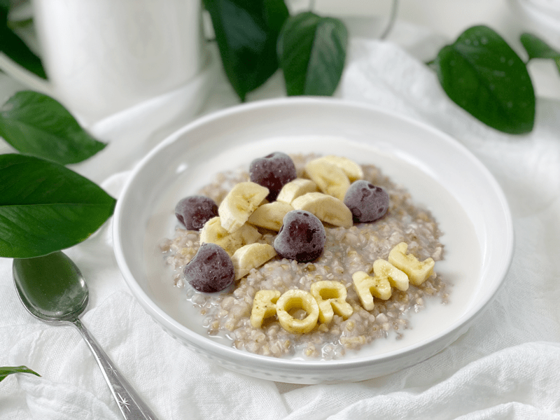
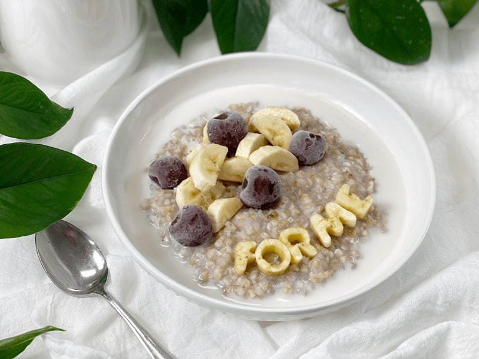

Warm, grain-based porridges are so satisfying, comforting, and easy to make. But one thing I have come to learn over the years is that everyone enjoys a different texture when it comes to porridges (buckwheat, oats, etc). Creamy, chewy, a mix of creamy-chewy, thick and chewy, thick yet creamy….So by no means am I stating that the cook times listed below are written in stone; they just reflect how I like it. Luckily, I like all texture stages from super creamy to thick and chewy. Where do you fall (comment below)?

With the technique listed below, the buckwheat porridge will turn out thick with a slight chew. However, you can easily adjust the cooked porridge to the texture that you prefer. It can be done by adding plant-based milk to each serving bowl, mixing it to reach the creaminess level that you like. I usually serve myself 1/4-1/2 cup and thin it out with some plant-based milk.
Buckwheat porridge can be enjoyed sweet or savory. Should you decide to go the savory routine, cook the groats in vegetable broth instead of water, which locks in and infuses a wonderful flavor. Mix in some steamed veggies, and you have yourself a wonderful nutrient-packed dish.
Health Benefits of Buckwheat
The nutritional benefits of buckwheat are plentiful! It is high in magnesium, Vitamin B6, fiber, potassium, and iron. It is also a good source of copper, zinc, and manganese. Another good note is that the glycemic index is low, avoiding a spike in blood sugar.
Raw Buckwheat Versus Kasha
When you go to the market you will find “raw” buckwheat (uncooked, pale tan color), kasha (cooked buckwheat, brown in color), whole groats, and broken groats. Personally, I use raw WHOLE buckwheat groats. If you like more a more toothsome texture, use whole groats. If you like a more creamy, sticky porridge, use the broken buckwheat groats. I don’t know about you, but I love learning where and how my food grows. If this is you, click (here) to learn more.
Prep Work | Soaking Buckwheat
Buckwheat is lower in lectins (plant compounds that contribute to leaky gut) than oatmeal. Buckwheat also contains high amounts of the enzyme phytase, which makes buckwheat gentler and more nutritious when it has been soaked. So, whether you decide to soak or not is completely up to you. I ALWAYS soak all nuts, seeds, and grains. If you are interested in learning how to soak buckwheat, please click (here).
Batch Cooking
I know this may sound silly, but as a recipe developer and recipe/technique online educator… I LOVE to batch cook so I can save time in the kitchen. We all lead very busy lives, so meal prepping can help reduce your weekly stress. I tend to make large plain batches of buckwheat porridge and dress it up differently with each bowl enjoyed.
- Pre-cook the buckwheat and use the extra plant milk to reheat and reconstitute the grains at serving time. You can decide how thick or thinned out you want it to be.
- Store in an airtight container for up to 5-7 days or freeze part of it in single-serving portions for up to 3 months. You can use freezer-safe jars or freeze in one container, planning on eating it within a week of defrosting.

Flavor Enhancers
This recipe is a base, foundation recipe. I believe that flavor enhancers ought to follow after cooking, especially if batch cooking. Now, if you are making this to eat in one serving, then, by all means, doctor it up as it cooks. But with batch cooking, it is best to make a plain pot of porridge and mix in different flavor add-ins every day to switch things up! Click (here) for an extensive list of ideas!
Why I Add Kombu Seaweed and What It Is
Kombu is a type of sea kelp that is rich in vitamins and minerals, including potassium, calcium, and iodine. It has a very mild flavor and won’t affect the taste of the porridge. Because it contains natural glutamic acid (the basis of MSG), it is a natural flavor enhancer. It adds umami to dishes, while also providing valuable minerals and nutrients to food it is cooked with.
It is high in vitamins A, C, E, B1, B2, B6, and B12. Seaweed also contains a substance (ergosterol) that converts to vitamin D in the body. In addition to essential nutrients, seaweeds provide us with carotene, chlorophyll, enzymes, and fiber. And while we are at it…it is high in iodine, which is essential for thyroid function!
Make Every Bite Count
- Add kombu seaweed to your cooking methods.
- Soak all grains before cooking.
- Chew each mouthful of food completely. Eat one mouthful at a time. Put your fork down in between bites. Slow down; don’t eat in a hurried state, as this will impede your digestion.
Yields 7 cups cooked
- 2 cups raw buckwheat groats, soaked
- 4 cups water
- 1 strip Kombu seaweed
When it comes to storing hot foods, we have a 2-hour window. You don’t want to put piping hot foods directly into the refrigerator. However, If you leave food out to cool, and forget about it you should, after 2 hours, throw it away to prevent the growth of bacteria. (source) Large amounts should be divided into smaller portions and put in shallow covered containers for quicker cooling in a refrigerator that is set to 40 degrees (F) or below.